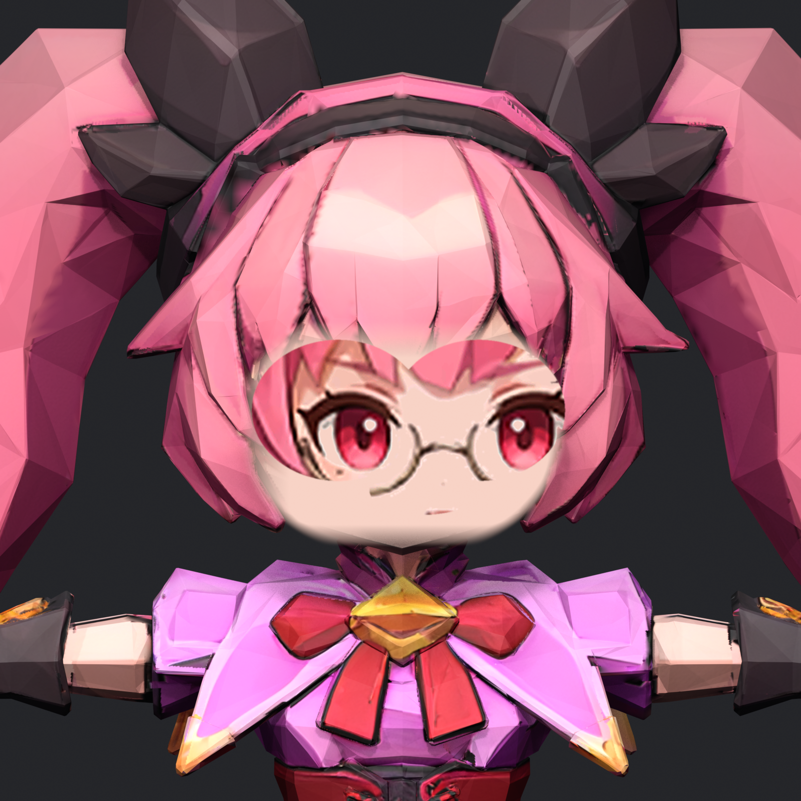
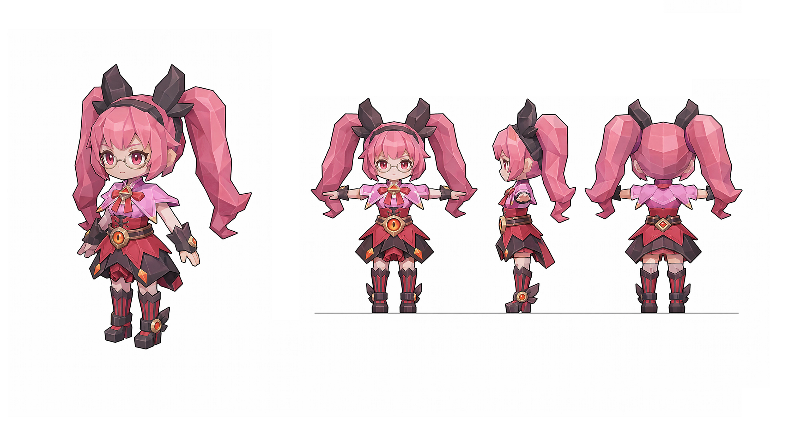
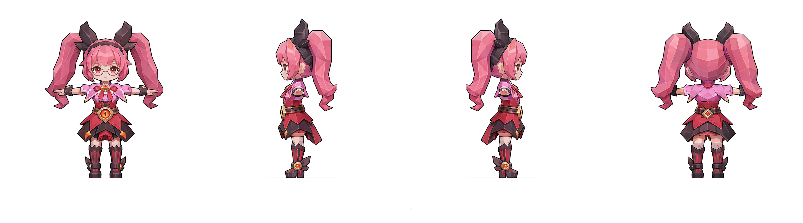
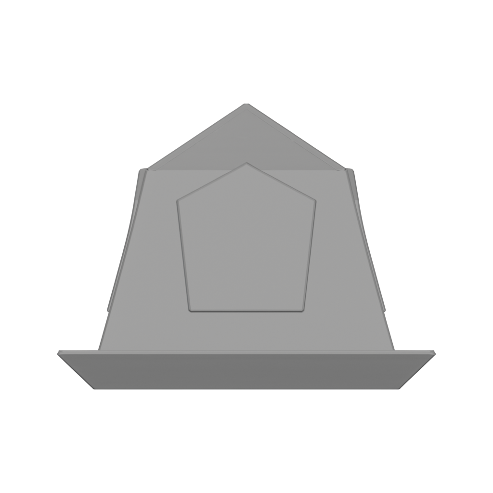
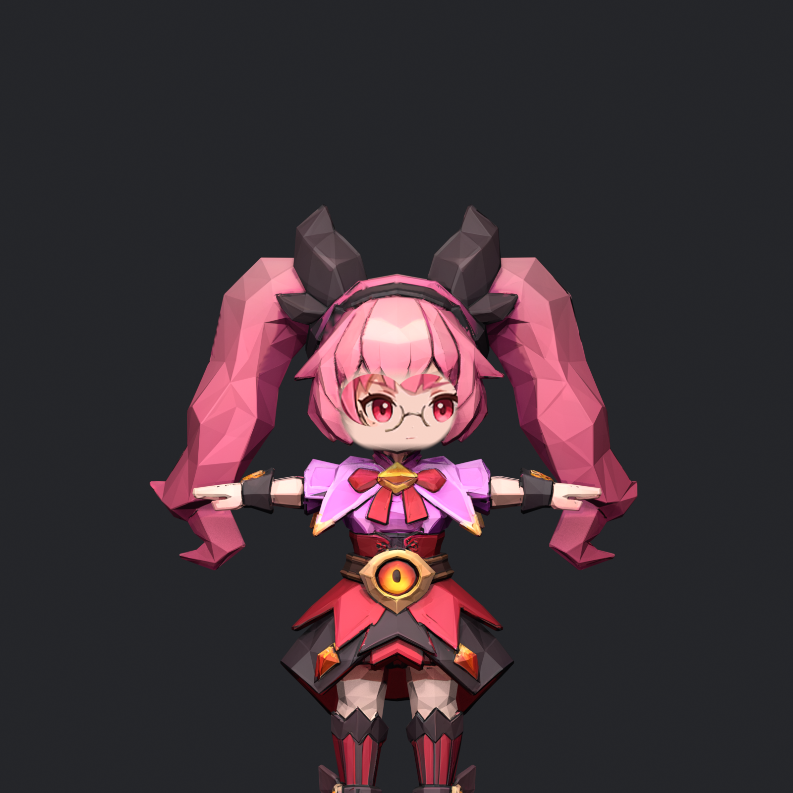
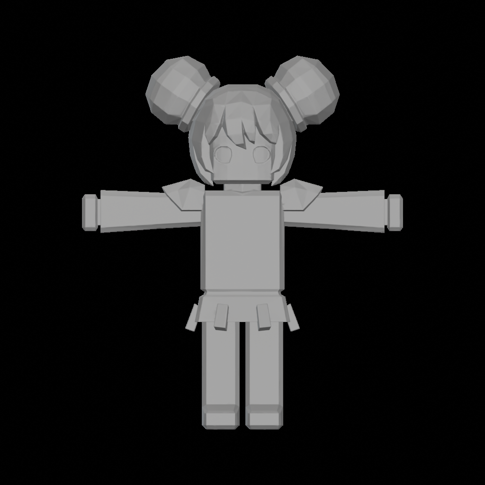
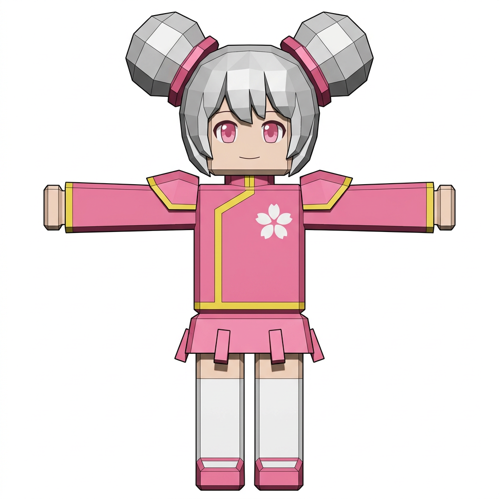
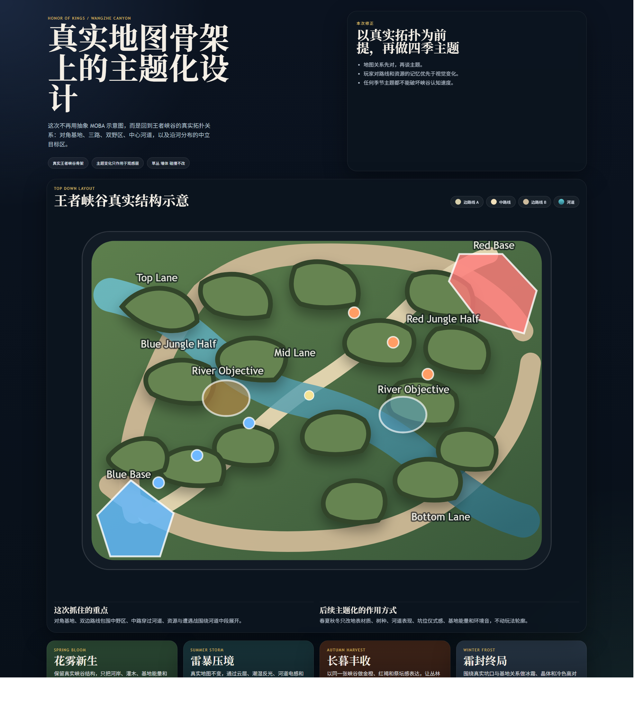
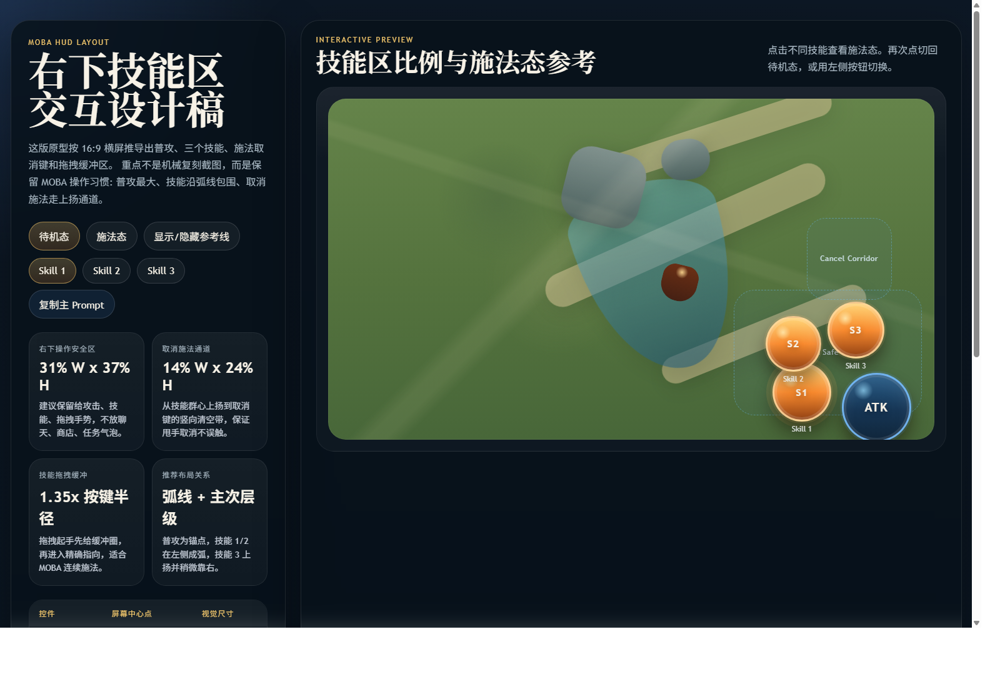

立项 Honor of Kings Roblox 完整产品一期。
当前项目已经具备英雄逻辑迁移、技能系统、移动端战斗基础和 Roblox 美术资产生产链路。一期要交付的是一个包含约 20 个英雄内容池、完整对局闭环、成长与运营能力的 Roblox 原生产品。长期目标是为 Honor of Kings 建立一个可持续更新、可扩展英雄内容、可承接 Roblox 用户增长的 IP 阵地。
建议立项 Honor of Kings Roblox 完整产品一期：交付约 20 个英雄内容池、短局团队竞技、成长运营与可扩展资产体系。
一期的工作不是从零探索战斗系统。本地仓库已经跑通英雄逻辑迁移流程，技能系统、效果管线、移动端战斗基础和 Roblox 美术资产生产链路都已具备。一期的核心是把这套底座收束成一款可上线、可运营、可扩展的完整产品。
批准对象
老板需要批准的是完整产品一期建设。内部制作可以分阶段推进与质量验收，但立项审批的对象是产品本身。
- 做什么：HoK 在 Roblox 上的英雄短局竞技产品。
- 基础在哪：英雄迁移、战斗系统、移动端、美术链路已成型。
- 交付什么：20 英雄内容池 + 完整对局闭环 + 成长运营。
- 要多少：64.3 万美元基础制作成本；广告 credits 单列、不是现金。
已经做的内容
项目已经完成一轮工程化整理，形成三块底座：技术与战斗、产品功能、美术生产。下面的能力都可在本地仓库与资产产出中核查到。
技术与战斗底座
- 英雄配置自动发现（HeroRegistry）
- 技能配置自动注册 + ID 冲突保护（SkillRegistry）
- 统一技能基类 BaseSkill（CD / 符文 / 训练无 CD）
- Archetype 中间层：Projectile / Area / Dash / Beam / Instant
- Effect / Buff / SkillHelper 统一效果管线
- 15 个技能配置化迁移、廉颇等英雄迁移样例
产品功能底座
- 大厅、选人、匹配 / 对局、训练模式
- UI_HeroSelect 动态选人，随配置扩展
- 移动端输入、MobileHUD、虚拟摇杆、技能按钮
- 技能释放、伤害、控制、Buff、效果执行链路
- 短局对战相关模块：Lobby / Match / Duel / Training
美术生产底座
- Roblox 风格英雄三视图 / 四视图 workflow
- 角色视觉设定 prompt 模板库
- R15 标准身体 + 独立部件生产路线
- Weaver / VISVISE / Blender / Validator 链路
- 已有英雄设定图、部件预览与 FBX 校验样例
关键工程证据
| 本地证据 | 当前状态 | 对一期的意义 |
|---|---|---|
| HeroRegistry | 自动扫描 ReplicatedStorage\Heroes，按 HeroID 注册英雄。 | 新增英雄无需改硬编码列表，20 英雄扩展成本可控。 |
| SkillRegistry | 自动扫描 ReplicatedStorage\Skills，按技能 ID 注册并防冲突。 | 英雄技能按文件拆分管理，配置互不污染。 |
| Archetype 技能层 | Projectile / Area / Dash / Beam / Instant 中间层成型（ServerModules\Archetypes）。 | 新技能以继承 + 参数化为主，规模化生产效率提升。 |
| 15 技能配置化 | REQ-006 测试报告：15 个技能格式统一，伤害 / CC / 护盾走统一管线。 | 英雄迁移底层方式已经成型，重点转为规模化执行。 |
| 廉颇迁移样例 | LianPo_Skills 保留 HoK 原始技能 ID、EffectRefs 与标准字段。 | 可按原始表数据迁移英雄逻辑，并保留追溯与调参空间。 |
| 30+ 英雄扩展方案 | .GameDev\RESEARCH\30+英雄扩展架构方案.md 记录接入流程、Effect ID 规划与配置拆分。 | 已有面向 20+ 英雄的架构设计，扩展路径清晰。 |
结论：英雄逻辑迁移已经完成工程化整理。当前项目不再处于战斗系统探索阶段，已进入 20 英雄内容池的规模化生产阶段。
要做的内容
一期要做的是一款完整产品的一期版本，覆盖从进入游戏到对局结束、再到留存运营的完整闭环。下面是一期建设的主要内容。
完整对局体验
- 完整大厅体验
- 选人与英雄展示
- 3v3 / 4v4 对局
- 技能、普攻、被动、局内目标
- 局后奖励结算
内容池与留存
- 约 20 个英雄内容池
- 英雄熟练度
- 任务系统
- 商店与基础商业化
- 外观与部件资产
表现与 LiveOps
- VFX / SFX / 动作表现
- 基础 LiveOps 能力
- 数据看板
- 广告素材与创作者试玩包
- 移动端性能与可读性优化
一期建设覆盖玩法、内容、成长、商业化、表现与运营六条线。内部制作会拆成里程碑并设质量门槛，但对老板批准的对象，是可上线、可运营、可扩展的完整产品一期。
产品一期交付范围
一期对外交付一款可上线运营的 Roblox 原生英雄竞技产品，内部代号暂定 Hero Brawl Arena。下表界定一期“做到什么程度算交付”。
| 交付项 | 一期标准 | 负责人关注点 |
|---|---|---|
| 对局体验 | 3v3 / 4v4 短局团队竞技，移动端优先，单局 5 到 8 分钟完整闭环。 | 新玩家能否快速上手并愿意复玩。 |
| 英雄内容池 | 约 20 个英雄达到可上线品质，覆盖射手、法师、战士、坦克、刺客、辅助。 | 角色差异化与内容厚度是否足够支撑留存。 |
| 成长与任务 | 英雄熟练度、任务系统、局后奖励形成日常回访理由。 | 留存曲线与长期投入意愿。 |
| 商业化 | 商店、外观、部件资产与基础变现入口上线。 | 变现节奏与公平感平衡。 |
| 美术与表现 | 英雄造型、VFX、SFX、动作、UI 与运营素材达到可上线观感。 | IP 识别度与 Roblox 平台适配度。 |
| 运营能力 | 基础 LiveOps、数据看板、广告素材与创作者试玩包就绪。 | 上线后能否持续运营与增长。 |
20 英雄内容池
一期内容规模为约 20 个英雄。本地仓库已跑通英雄逻辑迁移流程，可以稳定开发 20 个左右英雄，覆盖职业分布、操作差异与内容生产节奏。
现有英雄
Angela、HouYi、LianPo、Lux 已形成配置、技能、效果与表现的完整管线样例，证明英雄逻辑迁移方式成立。
优先英雄组
赵云、妲己、后羿、亚瑟、李白、安琪拉、孙尚香、张飞、韩信、貂蝉等，按职业与操作难度覆盖优先排期。
第二批英雄
由 CP、IP、策划与制作共同筛选，按玩家认知、职业覆盖、资产可用性与合规风险排序，补齐至约 20 个。
英雄上线质量门槛（内部验收）
以下分级是制作过程中的质量验收标准，用于管理每个英雄的完成度，统一在一期内推进至可上线品质。
| 质量门槛 | 验收内容 | 通过标准 |
|---|---|---|
| L0 逻辑可玩 | 技能槽、CD、伤害、控制、护盾、位移、被动、命中判定。 | 本地多人测试可完成完整对局，无阻塞 Error。 |
| L1 手感达标 | 移动端按键、技能前后摇、位移距离、命中与受击反馈。 | 玩家能区分英雄定位与节奏，核心技能有明确爽点。 |
| L2 平衡达标 | 职业覆盖、胜率偏差、反制关系、操作难度、团队贡献。 | 无单英雄长期压制，无明显低价值英雄。 |
| L3 上线达标 | 模型、动画、VFX、SFX、图标、介绍与合规素材。 | 达到上线观感，支持广告素材、主播体验与商店展示。 |
美术与资产生产体系
美术侧已经建立 Roblox 化资产生产链路的雏形。当前路线采用 Roblox R15 标准身体，叠加可控的头饰、武器、背饰、肩甲、贴图、Decal 与技能特效部件。这种部件化方式更符合 Roblox 平台的几何、性能、挂点与审核要求，也更适合 20 个英雄的规模化生产。

从设定图到可入 Studio 的 3D 角色
图为资产链路打通的样例英雄（pink hero demo）。从二维设定图出发，经四视图、部件化建模、Weaver 高模、Retopology、Blender 后处理，产出带贴图、带挂点、可进 Roblox Studio 适配的低模角色。这条链路已经能稳定走通，是 20 英雄规模化视觉生产的基础。
已跑通的资产生产链路
链路各步真实截图
以下为同一个样例英雄在链路各阶段的本地真实产出，对应上面五个步骤。




注：上图样例英雄为资产链路验证用 demo 角色；用于证明生产链路成立，正式英雄按 20 英雄名单生产。
已用于真实王者英雄
这条链路不止跑通 demo 角色，已用于王者正式英雄的 Roblox 化建模。以小乔为例，从高模到 Roblox 风格带贴图低模均已产出。


说明：小乔为王者荣耀正式英雄，此处展示其 Roblox 化建模产出，证明资产链路可直接服务 20 英雄正式内容生产（最终上线造型以 CP 与 IP 审批为准）。
已有产物与校验证据
| 产物 | 内容 |
|---|---|
| 英雄设定图 | 粉色英雄正 / 侧 / 背多视图与参考设定图（pink_hero_hd_contact_sheet.png / pink_hero_hd_reference.png）。 |
| 部件预览 | 部件 3D 预览图（Model2026061100288786\preview.png）。 |
| FBX 校验样例 | rigid accessory 校验 11/11 通过（roblox_part_accessory_validated.fbx.validation.json）。 |
| 生产计划 | main_hat、face_mark、test_cape 等部件计划，main_hat 已有 FBX 输出（studio_package\planning\production_plan.md）。 |
一期美术交付拆分
| 交付块 | 内容 |
|---|---|
| 英雄视觉适配 | 约 20 个英雄的 Roblox 化造型、色板、体型与部件拆分。 |
| 角色资产 | R15 基础体型策略，头饰、肩甲、武器、背饰、面部贴图、服装图案。 |
| 技能表现 | 弹道、AOE、护盾、命中、受击、控制、位移与终极技能表现。 |
| UI 资产 | 头像、技能图标、选人卡、局后结算、任务与商店界面。 |
| 运营素材 | 广告图、缩略图、创作者试玩包、活动 banner。 |
| 资产验收 | 三角面、尺寸、Attachment、贴图上限、Studio Accessory Fitting Tool、移动端可读性。 |
一期要把这条已跑通的链路产品化，用于 20 个英雄的视觉适配、部件资产、技能表现、UI 与运营素材生产，形成可持续的资产产线，而不是逐个英雄手工返工。
玩法与用户体验
一期玩法采用 Hero Brawl Arena：小地图团队对抗，保留英雄技能、团队配合、目标争夺与局内成长，节奏更短、目标更直观，匹配 Roblox 玩家的快速进入与社交习惯。


以上为已有的地图与操控设计产出，一期据此落地 3v3 / 4v4 地图与移动端 HUD。
| 设计项 | 一期方案 | 关注点 |
|---|---|---|
| 对局规模 | 3v3 与 4v4 双配置，默认入口按内部数据确定。 | 匹配时长、退局率、团战可读性、移动端操作负担。 |
| 对局时长 | 5 到 8 分钟，允许快速复活与高频交战。 | 首局完成率、第二局点击率、局中流失。 |
| 成长系统 | 局内轻成长 + 局外英雄熟练度，避免早期数值压制新玩家。 | 新手首胜率、老玩家留存、公平感反馈。 |
| 商业化入口 | 外观、动作、特效、表情、英雄展示位优先，礼包随留存放量。 | 商店点击率、装扮使用率、付费转化与口碑。 |
体验承诺：玩家第一分钟能完成选人、移动、释放技能、造成伤害并看懂胜负目标；第一天能在多个英雄之间感受到明显差异。
制作计划
一期建设分阶段推进。下面的 P0 / Alpha / Soft Launch 是内部制作里程碑与质量验收节点，用于管理进度与品质，最终交付物是完整产品一期。
立项确认：锁定一期目标、约 20 英雄候选名单、玩法承载方式、CP 交付边界、预算与广告 credits 使用条件。
P0 里程碑：完成核心战斗与生产流程定稿，跑通代表性英雄模板（弹道、范围、位移、引导、瞬发、复合），落地 20 英雄迁移排期与验收表。
Alpha 里程碑：推进约 20 个英雄逻辑与表现，完成 3v3 / 4v4 地图、移动端 HUD、局后奖励、匹配与关键性能优化，美术资产产线规模化运转。
上线准备：英雄按 L3 门槛收尾，完善商店、任务、外观、数据看板、广告落地页与创作者试玩包。
Soft Launch 验收：以小流量校验 D1 / D7、首局完成率、第二局点击率与广告获客效率，作为一期上线放量与二期规划的数据依据。
预算与资源
一期基础制作成本建议 64.3 万美元（643,000 美元），对应单人月约 9,600 美元，用于研发、美术、QA、管理与运营准备。Roblox 广告 credits 是条件性平台资源，不是现金、不计入制作预算，按下方口径单列管理。
| 预算项 | 金额（美元） | 用途 |
|---|---|---|
| 核心开发 | 25.8 万 | 战斗系统、英雄迁移、匹配与对局、移动端输入、成长与商店、数据看板。 |
| 美术与资产产线 | 18.5 万 | 资产链路产品化、英雄造型适配、动作、VFX、SFX、UI 与运营素材。 |
| QA 与平衡 | 8.0 万 | 20 英雄测试矩阵、多人 Local Server 测试、性能、移动端兼容、平衡迭代。 |
| 项目管理与预备金 | 7.0 万 | 排期管理、CP 对接、风险缓冲、审批返工与临时外包。 |
| 运营工具与内容准备 | 5.0 万 | 活动配置、商店配置、创作者试玩包、素材版本管理。 |
| 合计 | 64.3 万 | 一期基础制作成本（现金）。 |
广告 credits 与买量资源的口径（重要）
这一块必须和制作预算分开看，避免把平台资源误读成现金或确定性收入。
| 资源项 | 口径 | 关键约束 |
|---|---|---|
| 基础制作成本 | 643,000 美元现金 | 作为 2026 年 7-11 月一期制作基准。 |
| Developer UA Match | 至少预留 100,000 美元现金 | 使用 Roblox 初始 10 万美元 UA 时，开发方需 1:1 等额现金匹配。 |
| Roblox 广告 credits | 最高 1,000,000 美元平台 credits | 不是现金；受 Developer Match、iROAS 与平台判断约束，仅在数据正向时放大增长。 |
一句话口径：Roblox 给的是最高 100 万美元平台广告 credits，不是 100 万美元现金。初始最多 10 万美元 UA 需开发方等额现金匹配，后续投放取决于 iROAS。这个资源只能放大正向产品，不能用来补救产品问题；任一核心指标不达标即停止烧 credits。
成功标准与止损
一期投入对应明确的过关门槛与止损线。下面的数字是各制作里程碑的验收标准，用来回答"什么算做成了、什么时候该停"，让投入可控、决策有据。
体验 Gate（必须先过）
| 指标 | 门槛 |
|---|---|
| 首个有效交互 | ≤ 10 秒 |
| 首个奖励 | ≤ 30 秒 |
| 首次战斗 | ≤ 60 秒 |
| 首局完成率 | ≥ 70% |
| 次局率 | ≥ 40% |
| 平均局长 | 3 – 5 分钟 |
| 移动端性能 | 中端 Android 30fps |
商业 Gate（体验过关后再看）
| 指标 | 门槛 |
|---|---|
| 次日留存 D1 | ≥ 25% |
| 七日留存 D7 | ≥ 8% |
| 初始变现 | 正向，且不伤害留存与公平感 |
| HOK 导流链路 | 曝光 → 点击 → code → 下载 → 首局完成可追踪 |
| iROAS | 接近或达到 100% 后才扩大 UA |
判断顺序（止损线）：首局体验没过，不谈内容扩张；留存没过，不烧 UA；变现没过，不谈 iROAS；导流不可追踪，不谈 HOK 商业价值。任一上游门槛不达标，先修不扩。
各里程碑的过关与止损
| 里程碑 | 过关标准 | 不过关则止损 |
|---|---|---|
| P0 Prototype | 核心战斗闭环可玩，3v3 / 4v4 对照数据成立，首战 60 秒内。 | 核心战斗与首局体验不成立，不进入英雄量产。 |
| Alpha 内容 | 英雄按 L0–L3 门槛推进，主模式可连续多人测试，移动端可读。 | 宁可少上几个英雄，也不让半成品英雄拉低整体手感与观感。 |
| Soft Launch | 体验 Gate 与商业 Gate 达标，导流链路可追踪。 | 留存 / 变现 / 导流任一不达标，停止扩量，不烧 credits。 |
说明：20 英雄是一期内容池的目标规模；外测与首发曝光按完成度（L3）选择稳定英雄，质量优先于凑数。
愿景与长期规划
一期交付完整产品后，项目按三层推进：先做成产品闭环，再扩内容与运营，最终成为 HoK 在 Roblox 上的长期 IP 阵地。
完成 20 英雄产品闭环
- 约 20 英雄内容池
- 短局团队竞技
- 完整基础功能
- 可运营资产生产流程
扩内容与运营
- 扩英雄、扩模式
- 赛季体系
- 皮肤 / 外观
- 活动与创作者合作
HoK 的 Roblox IP 阵地
- 年轻与海外用户触达
- Roblox 社交传播
- UGC 平台内容增长
- 可持续英雄与外观资产体系
Honor of Kings Roblox vNext 是 HoK 在 Roblox 上的完整产品一期：基于已跑通的英雄逻辑迁移、美术资产生产与移动端战斗底座，交付 20 个英雄内容池、短局团队竞技、成长运营与可扩展资产体系，为 HoK 建立长期可运营的 Roblox IP 阵地。
风险与决策项
20 英雄的质量分层压力
应对：用 L0 到 L3 门槛管理每个英雄的完成度，按统一节奏推进至上线品质，避免数量目标压过品质。
Roblox 用户理解成本
应对：短局、小地图、强目标提示、移动端按键容错与第一分钟教学，复杂规则只保留服务爽感与复玩的部分。
IP 表现与 Roblox 风格适配
应对：CP 先锁定英雄名单、视觉尺度、动作风格与可用资产范围，模型和特效按 Roblox 可读性做部件化适配。
竞技公平与作弊
应对：服务端保持技能判定、伤害、CD 与关键状态权威，客户端只负责输入、预测与表现，数据上报用于异常检测。
立项会决策项
| 决策项 | 建议结论 | 会后负责人 |
|---|---|---|
| 是否批准一期建设 | 建议批准 Honor of Kings Roblox 完整产品一期建设，交付约 20 英雄内容池与完整对局运营闭环。 | 工作室负责人 / 项目负责人 |
| 英雄内容规模 | 确认约 20 个英雄作为一期内容池，按 L0 到 L3 门槛管理完成度。 | 策划负责人 / 技术负责人 / QA |
| 玩法承载方式 | 采用 Hero Brawl Arena，3v3 / 4v4 双配置，默认入口由内部数据确定。 | 玩法负责人 / 数据负责人 |
| 美术资产产线 | 批准将已跑通的 ComfyUI / Weaver / Roblox 资产链路产品化，支撑 20 英雄规模化生产。 | 美术负责人 / 技术负责人 |
| 基础制作预算 | 批准 64.3 万美元（643,000 美元）一期基础制作成本（现金）。 | PM / 商务 / 运营 |
| 买量与 credits 口径 | 确认 Developer UA Match 至少预留 10 万美元现金；广告 credits 不计入现金，仅在 KPI 达标后分阶段释放，不达标即停。 | 商务 / 财务 / 运营 |
| 成功标准与止损 | 确认体验 / 商业 Gate 门槛与各里程碑止损线，作为后续投入与扩量的判断依据。 | 项目负责人 / 数据负责人 |
| CP 与 IP 交付 | 确认英雄名单、素材范围、审批时限、宣传口径与合规边界。 | 商务 / IP / 美术负责人 |